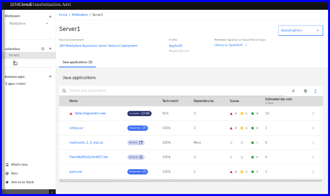
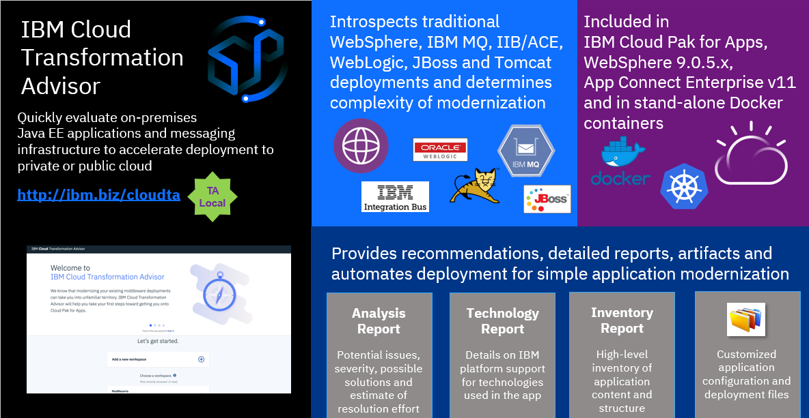

Modernize Existing Applications with IBM Transformation Advisor and IBM Cloud Pak for Applications
What s WebSphere Liberty?
IBM WebSphere® Liberty is a Java™ EE application server with a low-overhead Java runtime environment designed for cloud-native applications and microservices. WebSphere Liberty was created to be highly composable, start fast, use less memory, and scale easily. The [Total Economic Impact study] (https://www.ibm.com/account/reg/signup?formid=urx-30750) from Forrester Research shows that Liberty can increase developer productivity, simplify administration and maximize infrastructure utilization.
The WebSphere Liberty architecture shares the same code base as the open sourced Open Liberty (link resides outside IBM) server runtime, which provides additional benefits such as low-cost experimentation, customization and seamless migration from open source to production.
Read more about the featuees and benefits of WebSphere Liberty for app modernization and new cloud native development. https://www.ibm.com/cloud/websphere-liberty
Modernize and Simplify with WebSphere Liberty in containers and cloud
Revolutionize the way you support your application estate. Reduce capital and operational costs, streamline security and simplify management¹. To get started, analyze your existing Java EE deployments with Transformation Advisor, a no-cost tool that identifies workloads that can easily move to Liberty in containers, and complex workloads that can move into VMs.
Build new cloud native apps-using-ibm-transformation-advisor-and-cloud-pak
Use the latest Java EE 8 and MicroProfile APIs to build cloud-native apps and deploy them in Docker containers, on premises or in the cloud. Open Liberty gives developers the freedom to innovate and test with the option to deploy with IBM support with Liberty without rewriting any code.
Placeholders.
WebSphere Liberty is built on the Open Liberty project that provides a 100% open source Java EE and MicroProfile core. The combination of IBM technology and open source software provides developers with access to the latest features.
https://openliberty.io/
WebSphere Liberty - Closing the developer gap
Getting started with Open Libety demo:
Open Liberty and Microprofile for fault tolerant microservices
Modernize existing Java Workloads
Using IBM Transformation Advisor to assess your aplication portfolio for modernization reccomendations
IBM Cloud Transformation Advisor helps you to analyze your on-premises workloads for modernization. It determines the complexity of your applications, estimates a development cost to perform the move to the cloud, and recommends the best target environment.
Understanding the value of IBM Tranformation Advisor
2 minutes
Quick demonstration: How to use Transfomration Advisor to assess my WebSphere Applications
See for yourself how IBM Transfromation Advisor is used to easily assess your existig WebSphere workloads and delivers insights into the feasabilty of modernizing the applications for containers and cloud.
7 minutes
Quick demonstration: How to use IBM Transformation Advisor's migration plan to facilitate moving your application to containers and RedHat OpenShift Platform
See for yourself how using IBM Transformation Advisor and its automatic generation of a migration bunlde can assist with containerization and deployment to RedHat OpenShift Platform.
The migration bundle includes generated artifacts that assist with building, configuring, and deploying the application to WebShhere Liberty on the RedHat OpenShift Platform via integrated application stacks and pipelines with IBM Cloud Pak for Applications.
8 minutes
Guided Tutorials
1. Application Modernization - Assessment Phase
Gain valuable insights into applications during application modernization "Assessment" phase.
This tutorial focuses on the application assessment (evaluation) phase of application modernization for Java workloads to cotainer and cloud. You will use IBM Transformation Advisor to evaluate on-premises Java applications and identify a migration candidate for moving to the cloud.

2. Application Modernization - Re-Platform Phase
Gain valuable insights into applications during application modernization "Assessment" phase.
IBM Transformation Advisor bridges the gap between existing development activities and cloud-native development together with the ‘Accelerators for Teams’ in the IBM Cloud Pak for Applications (ICPA). Transformation Advisor will accelerate the development process by creating the configuration and deployment artifacts for an application, then facilitate the developer’s use of the enhanced developer productivity tools in IBM Cloud Pak for Applications.
This tutorial brings the cloud-native development experience from the “Create and Deploy a Cloud Native App to IBM Cloud Pak for Applications (ICPA)” lab, which develops a cloud native microservice application using the nodejs-express and java-spring-boot Application Stacks, to the modernization of existing application.

3. FREE! Try IBM Transformation Advisor Local to assess your applications yourself!
The process of modernizing applications and moving to the cloud can be a large undertaking. Careful planning is needed to prepare business inventory and infrastructure and to determine the best path forward for each application. If you don't yet have a cloud platform but are ready to begin the assessment for your modernization journey, installing IBM Cloud™ Transformation Advisor locally can help you get started.
Transformation Advisor Local is available for local istallation so you can get started quickly to assess your applications today. Transformation Advisor runs locally on docker containers on yor developer desktop.
Transformation Advisor Local is FREE for use!
